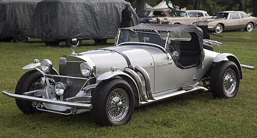
Excalibur - American neo-classic luxury car
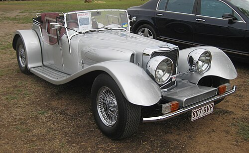
Panther J72 - Inspired by Jaguar SS100
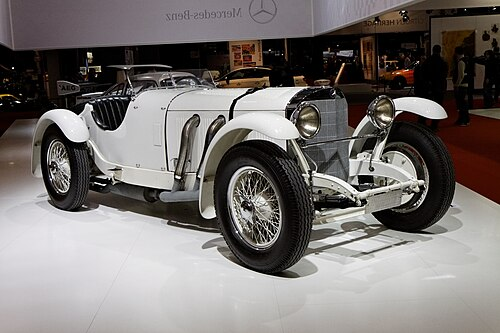
MP Lafer - Brazilian MG-inspired roadster
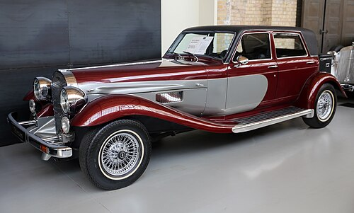
Panther De Ville - 1930s luxury revival
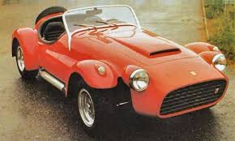
Panther FF - Retro British sports car
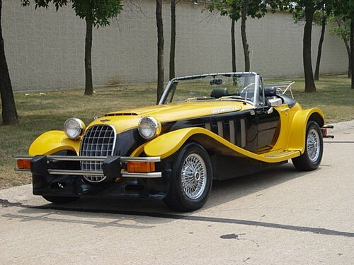
Panther Lima - Classic British roadster styling
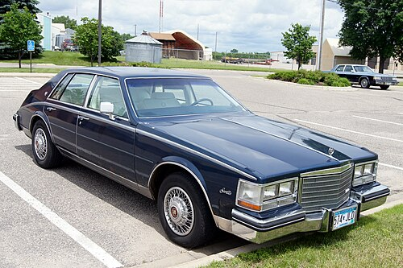
Cadillac Seville - Bustle-back design
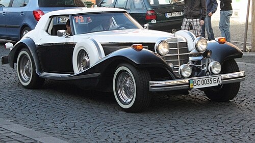
Phillips Berlina - Inspired by Mercedes 540K
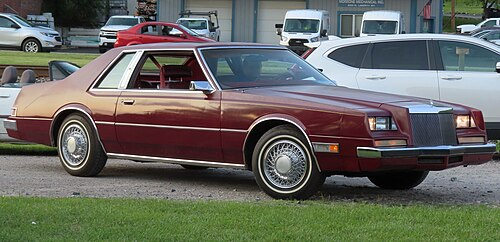
Imperial - Retro luxury sedan
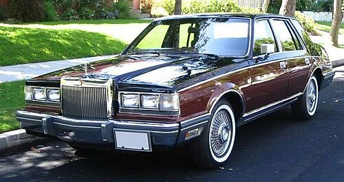
Lincoln Continental - 1980s retro elegance
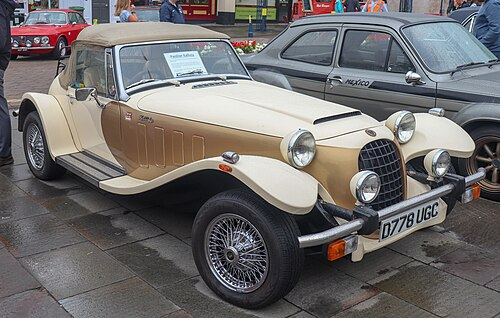
Panther Kallista - Lightweight roadster
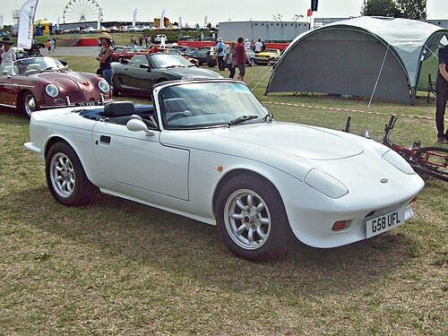
Evante - Lotus-inspired sports car
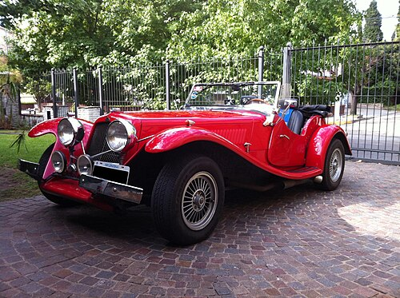
Eniak Antique - Italian neo-classic
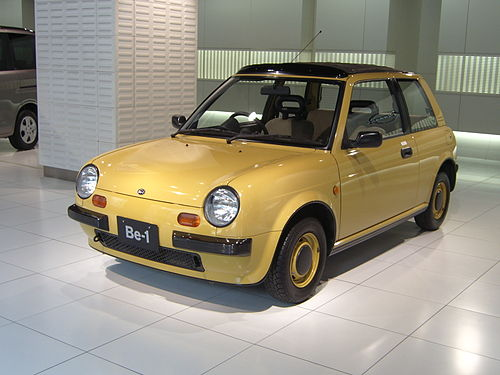
Nissan Be-1 - Retro city car
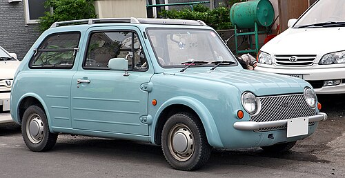
Nissan Pao - Nostalgic compact
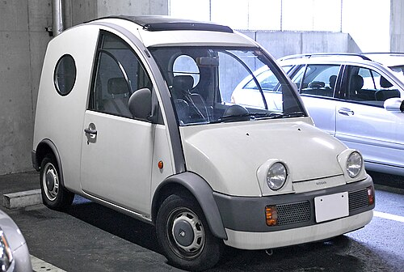
Nissan S-Cargo - French-inspired van
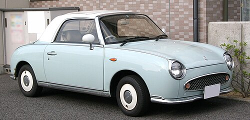
Nissan Figaro - 1960s-style convertible

Subaru Vivio Bistro - Retro kei car